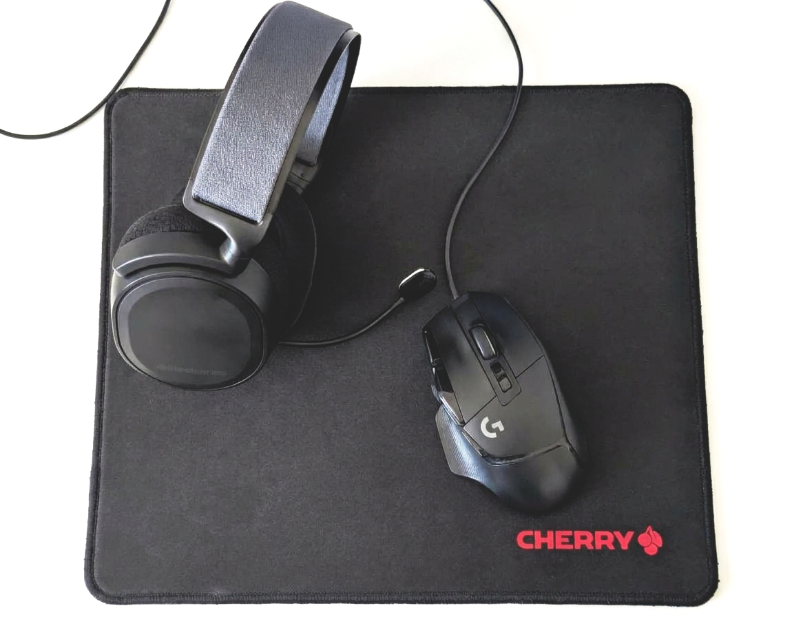
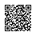

A little guidance goes a long way
Getting started
Let’s measure your system’s response.
We’ll take it one small step at a time. Choose what you’d like to measure, follow a few simple instructions, and we’ll help you understand the result.
Choose your pace
How would you like to use the meter?
Both options measure the same thing. Pick whichever feels right for you.
Step 1
What would you like to measure?
Choose the setup that works for you. You can always go back and change your mind.
Mouse to headphones · Setup
Let’s get your microphone ready.

For the clearest result:
- Place your microphone as close as possible to the mouse button.
- Turn your headphone volume all the way up.
- Find a quiet spot and keep still while we record.
Your browser will ask for microphone permission when you continue. Audio is processed only on this device.
Mouse to headphones · Recording
Three gentle clicks. That’s all.
Press and keep holding the mouse button until you hear the beep. Then release it. We’ll move on after three clicks.
- 1Press and holdKeep the mouse button down until you hear the beep.
- 2ReleaseLet go after you hear the beep.
- 3Press and holdWe’ll listen for one last beep.
- 4ReleaseYou’re done after this one!
- 5Press and holdKeep holding until you hear the final beep.
- 6ReleaseThat’s all three clicks.
Mouse to headphones · Review
Can you hear the clicks and beeps?
Listen to the recording. If you can hear both the mouse clicks and the beeps, we’ll measure them for you.
Mouse click Beep
Mouse to headphones · Your result
Here’s your system’s response time.
Measured across your three clicks.
Mouse click Beep
Details
| Attempt | Mouse click | Beep | Latency |
|---|
Mouse to screen · Step 1
What will you record with?
Choose a camera that can record slow-motion or high-frame-rate video.
Mouse to screen · Step 2
Let’s make a clear recording.
Keep the mouse and screen in the same frame while recording. Move your mouse over the area below and click or move it.
Mouse to screen · Step 3
Your recording is ready to analyze.
Open the simple video calculator on your phone, then choose the recording you just made.

Scan this code with your phone
Open the calculator on your phoneTransfer your video to this device, then open the calculator and select it to begin.
Open the calculator in a new tab